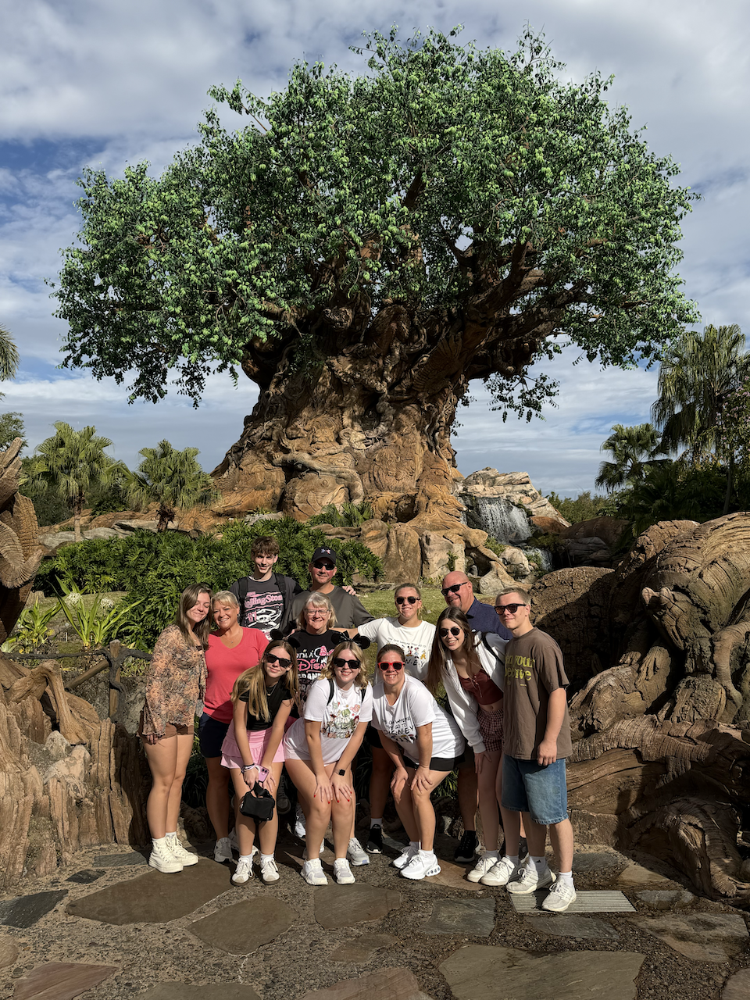

International Travels
Canada
From a young age, my dad's side of the family has traveled to rural Canada for annual fishing trips. While I have not attended in many years, I still have fond memories of the cabin and the time I spent there as a kid.
Mexico
My first trip to Mexico with my family is something I will never forget. Whether we were relaxing by the pool or ziplining during an excursion, there was always something fun to do.
Costa Rica
My most recent family trip was to Costa Rica, where we split our time between the rainforest and the beaches. I had never seen such natural beauty before, and it is still one of my favorite travel memories.
Featured Destination: Disney World

I have been to Disney World in Florida a handful of times in my life, and each experience has been unique. My first two trips were when I was a young child with my family. Later, in middle school, I had the opportunity to go with my best friend and my parents, something we had both dreamed about since we were little girls. Most recently, I traveled to Disney with my boyfriend and his family. It was a completely different experience nearly a decade after my previous trip, but it may be the trip I hold most dear.
Things I Enjoyed About Disney World
- Spending time with family and friends
- Visiting the different parks
- Going on rides and attractions
- Making new memories each time I visited
Concert Destinations
Ohio
Recently, I made my first trip to Ohio for Buckeye Country Superfest. Tyler Childers, Lord Huron, the Red Clay Strays, and Flatland Cavalry all performed during one hot summer day.
Chicago
While Chicago is practically a stone's throw from my hometown, it feels like entering a different world whenever I am there. Harry Styles and J. Cole are two of the biggest artists I have seen perform in the city.
Want to See More?
Explore some of the places and experiences that have made my travels memorable.
Explore My Travels